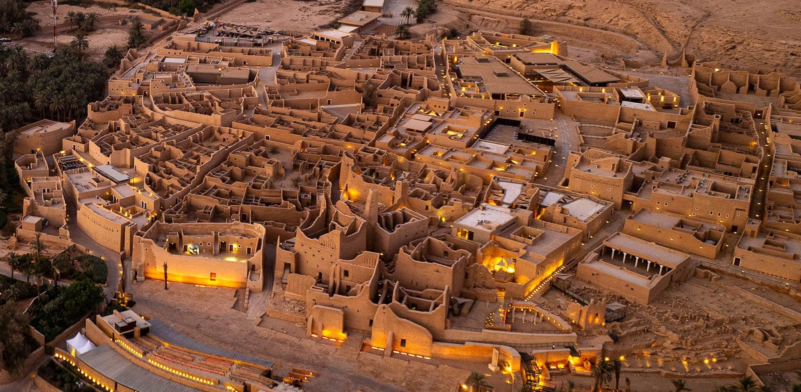

Modern Landmarks
Riyadh is home to iconic skyscrapers, high-fashion shopping centers, and major entertainment attractions, including the Boulevard Riyadh City and Six Flags Qiddiya.
Discover Saudi Arabia
Riyadh is the capital of Saudi Arabia and a vibrant metropolis filled with modern architecture, rich culture, fascinating history, and some of the world's best food.
Get StartedExplore the many sides of Riyadh.
Riyadh is home to iconic skyscrapers, high-fashion shopping centers, and major entertainment attractions, including the Boulevard Riyadh City and Six Flags Qiddiya.
To experience the culture and history of Saudi Arabia, visit historic sites such as Diriyah and Al Masmak Fortress to learn about the rich cultural heritage of Saudi Arabia.
Riyadh's food and café scene has something to satisfy everyone, including traditional Saudi food like Kabsa and modern cafés and restaurants with international cuisine.
Riyadh is an exciting destination with much to offer both history and culture, as well as contemporary attractions. With a variety of things to do such as visiting the historic district of Diriyah, enjoying spectacular views from the Kingdom Centre Tower, and experiencing the vibrant energy of Boulevard Riyadh City, this walkable city provides visitors with exciting ways to explore. There are also many types of cultural and entertainment venues for travelers interested in experiencing a little bit of everything! From traditional markets or museums to contemporary entertainment and dining, Riyadh provides visitors with an amazing experience while visiting the capital of Saudi Arabia!

Helpful advice for exploring Riyadh.
The best time for visiting Riyadh would be during the winter months from November to March, when the weather is cooler and Riyadh Season brings many entertainment events and activities to the city.
There are several modes of transportation visitors can use such as ride-sharing apps like Uber and Careem, taxis, buses, and the recently developed Riyadh Metro system.